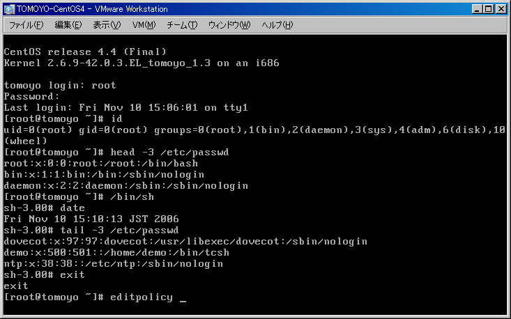
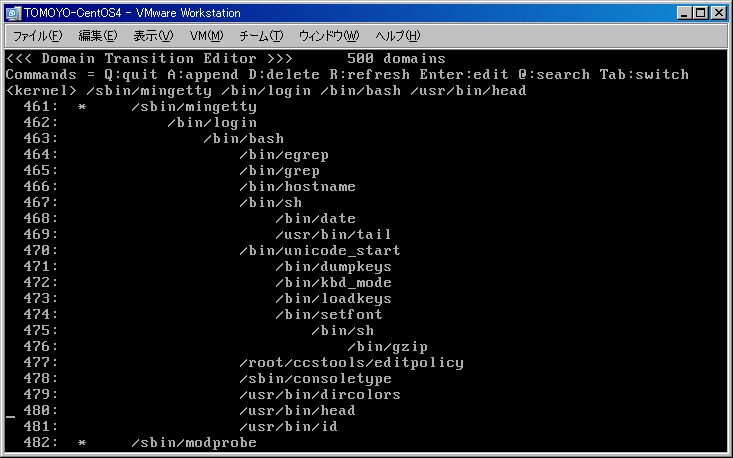
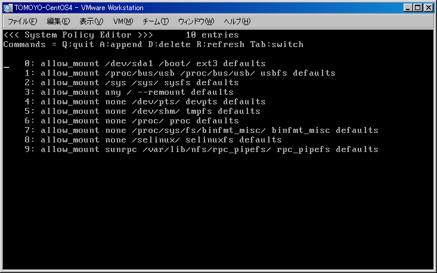
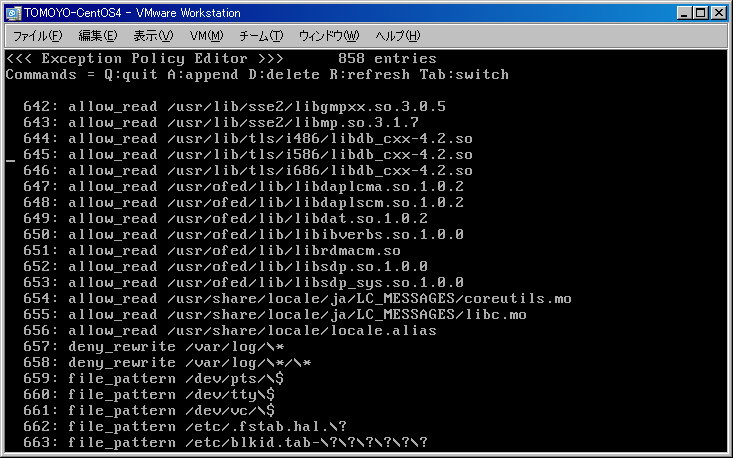

Info: Version 1.3.2 is available.
Last modified: $Date$
TOMOYO Linux includes a CUI based Policy Editor. It is possible to use arbitrary editors such as vi and emacs, for TOMOYO Linux's policy is text files. But using the Policy Editor is recommended, for when editors attempt to write to /proc/ccs interfaces, they produce a lot of noisy error messages such as "Can't create backup file".
You can start this editor by typing editpolicy at the prompt.

The screenshot below is the policy after booting CentOS 4.4 with "accept mode" and doing the operations listed above.
This screen shows the list of domains and domain transitions. You can analyze how Linux operates on bootup.
<Screen for editing domain policy (1)>
Let's browse the policy recorded by the kernel for startup script of anacron.
The policy editor has two modes. One is to show domains and domain transitions, the other is to edit ACLs within the selected domain. The former mode is default.
You can switch to the mode to edit ACLs within the selected domain after choosing the domain you want to know the ACLs.
You can use arrow keys to move cursor. Select the line for anacron and press Enter, and the screenshot below (ACLs for executing startup script for anacron) will appear.
<Screen for editing domain policy (2)>
The integer next to the line number is an octal representation of Linux's permission(rwx). For example, 4 is r--(read), 6 is rw-(read/write), 1 is --x(execute).
You will see the ACLs needed for executing the startup script for anacron are automatically recorded by the kernel.
The bottom line "use_profile" is the profile number assigned to this domain. You can change using setprofile command. Also, you can change by pressing "a" key and enter "use_profile" followed by profile number and Enter.
Next, press Enter to go back to the screen to show domains and domain transitions, and search the domain for /sbin/mingetty.
You will find that /bin/bash is invoked by /bin/login and /bin/login is invoked by mingetty by logging into the system,
and /bin/sh which is a symbolic link to /bin/bash is treated as /bin/sh because "alias /bin/bash /bin/sh" is declared in the exception policy (shown later).
Also, you will find that commands you have invoked before invoking this policy editor such as head and date are recorded.
Now move the cursor to the domain for head and press Enter.

The /usr/bin/head invoked by /bin/bash invoked by /bin/login invoked by /sbin/mingetty is granted to read /etc/passwd .
You will find that "domains are distinguished and ACLs are granted independently for the same program if the process's invocation histories differ" and "ACLs are granted with fine-grained objects".
Moreover, since these distinctions are made automatically by the kernel, it is possible for all administrators who have standard skill of administrating Linux to master TOMOYO Linux.
You can switch to the screen for editing system policy and exception policy by pressing Tab key.
<Screen for editing system policy>

<Screen for editing exception policy>

The editpolicy is for editing policy in the kernel directly when the system is running with the TOMOYO Linux's kernel. To edit policy stored in the /etc/ccs/ directory, use editpolicy_offline .